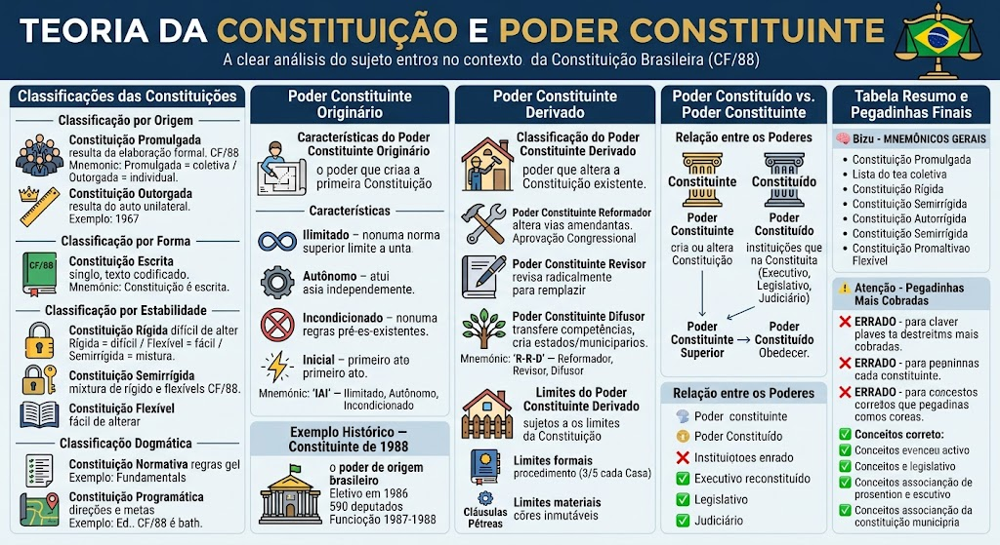

Classificação por Origem
Classificação por Origem
Constituição Promulgada:
- Resulta de um processo de elaboração formal (assembleia constituinte, congresso, etc.).
- Exemplo: Constituição de 1988 (promulgada por Assembleia Nacional Constituinte).
Constituição Outorgada:
- Resulta de um ato unilateral de um governante (monarca, ditador, etc.).
- Exemplo: Constituição de 1967 (outorgada por Costa e Silva).
🧠 MNEMÔNICO: 'Promulgada = coletiva (assembleia) / Outorgada = individual (governante).'
Classificação por Forma
Classificação por Forma
Constituição Escrita:
- Texto único, codificado, fixo.
- Exemplo: Constituição Federal de 1988.
Constituição Costumeira:
- Baseada em costumes e tradições, não em um texto escrito.
- Exemplo: Inglaterra (sistema costueiro).
⚠️ Pegadinha: A banca afirma que a Constituição brasileira é costumeira. ERRADO. É escrita (Art. 1º da CF/88).
Classificação por Estabilidade
Classificação por Estabilidade
Constituição Rígida:
- Difícil de alterar (exige maioria especial, referendo, etc.).
- Exemplo: Constituição dos EUA.
Constituição Semirrígida:
- Combinação de rigidez e flexibilidade (alguns temas exigem maioria especial, outros maioria simples).
- Exemplo: Constituição Francesa de 1958.
Constituição Flexível:
- Fácil de alterar (maioria simples).
- Exemplo: Constituição do Reino Unido.
🧠 MNEMÔNICO: 'Rígida = difícil / Flexível = fácil / Semirrígida = mistura.'
⚠️ Pegadinha: A banca afirma que a CF/88 é rígida. ERRADO. É semirrígida (emendas exigem 3/5 ou 2/3, mas leis ordinárias exigem maioria simples).
Classificação Dogmática
Classificação Dogmática
Constituição Normativa (ou Substantiva):
- Estabelece regras gerais de direito (ex.: direitos fundamentais, estrutura do Estado).
Constituição Programática (ou Objective):
- Estabelece diretrizes e metas a serem alcançadas por leis posteriores.
Constituição Material:
- Contém as normas que criam e organizam o Estado.
Constituição Formal:
- Contém as normas que regulam o funcionamento do Estado.
⚠️ Pegadinha: A banca afirma que a CF/88 é apenas normativa. ERRADO. É normativa e programática (tem diretrizes e metas, como a reforma agrária, a educação, etc.).
⚠️ Pegadinhas Frequentes
⚠️ Pegadinhas Frequentes
❌ 'CF/88 é costumeira.' → ERRADO (é escrita).
❌ 'CF/88 é rígida.' → ERRADO (é semirrígida).
❌ 'CF/88 é apenas normativa.' → ERRADO (é normativa e programática).
❌ 'Constituição outorgada é feita por assembleia.' → ERRADO (é feita por um governante).
Características do Poder Constituinte Originário
Características do Poder Constituinte Originário
O Poder Constituinte Originário é o poder que cria a primeira Constituição de um país. É o poder constituinte originário — ou seja, o primeiro a constituir.
Características:
1. Ilimitado: não há norma superior a limitar suas ações (cria a própria Constituição).
2. Autônomo: atua independentemente do Poder Constituído.
3. Incondicionado: não precisa seguir regras pré-existentes.
4. Inicial: é o primeiro ato constituinte de um país.
🧠 MNEMÔNICO: 'IAI' — Ilimitado, Autônomo, Incondicionado.
Exemplo Histórico — Constituinte de 1988
Exemplo Histórico — Constituinte de 1988
A Assembleia Nacional Constituinte de 1988 foi o Poder Constituinte Originário do Brasil.
Como funcionou:
- Eleita em 1986 por voto direto;
- Composta por 590 deputados (375 eleitos + 215 suplentes);
- Funcionou de 1987 a 1988;
- Produziu a Constituição Federal de 1988.
Características demonstradas:
- Ilimitado: a Assembleia criou a CF sem se submeter a nenhuma norma anterior.
- Autônomo: atuou independentemente do governo military.
- Incondicionado: não precisou seguir regras do regime anterior.
⚠️ Pegadinha: A banca afirma que a Constituinte de 1988 era limitada pela Constituição de 1967. ERRADO. Era originária (ilimitada, autônoma, incondicionada).
Para Leigos – Poder Constituinte Originário
Para Leigos – Poder Constituinte Originário
Pense no Poder Constituinte Originário como um arquiteto que está construindo uma casa do zero:
- Ele não tem um projeto anterior para seguir;
- Ele decide tudo: quantos cômodos, onde fica cada porta, qual o estilo;
- Ele não precisa perguntar permissão a ninguém;
- Ele é o único que pode decidir como será a casa.
A Constituinte de 1988 foi exatamente isso: um grupo de pessoas que decidiu como seria o Brasil, sem se prender a regras anteriores.
Classificação do Poder Constituinte Derivado
Classificação do Poder Constituinte Derivado
O Poder Constituinte Derivado é o poder que altera a Constituição já existente. Diferentemente do originário, ele se submete às regras da Constituição que está alterando.
Três tipos:
1. Poder Constituinte Reformador:
- Altera a Constituição por meio de emendas.
- Exemplo: emendas aprovadas pelo Congresso Nacional.
2. Poder Constituinte Revisor:
- Revisa a Constituição com intenção de substituí-la totalmente.
- Exemplo: proposta de emenda que reforma a CF de forma radical.
3. Poder Constituinte Difusor (ou Decentralizador):
- Transfere competências da União para os Estados ou Municípios.
- Exemplo: emendas que criam novos Estados ou municípios.
🧠 MNEMÔNICO: 'R-R-D' — Reformador, Revisor, Difusor.
Limites do Poder Constituinte Derivado
Limites do Poder Constituinte Derivado
O Poder Constituinte Derivado não é ilimitado — ele se submete aos limites da própria Constituição:
Limites formais:
- Seguir o procedimento de emenda (Art. 60, caput: 3/5 de cada Casa).
Limites circunstanciais:
- Não pode ser usado durante o exercício do mandato (Art. 60, §1º, II — vedação de emenda durante mandato).
Limites materiais (Cláusulas Pétreas — Art. 60, §4º):
- Forma federativa de Estado (União, Estados, DF, Municípios);
- Voto direto, secreto, universal e periódico;
- Separação dos Poderes;
- Direitos e garantias individuais e coletivos.
⚠️ Pegadinha: A banca afirma que o Poder Constituinte Derivado pode alterar qualquer coisa. ERRADO. As cláusulas pétreas são imutáveis, mesmo com 3/5.
Cláusulas Pétreas — Art. 60, §4º
Cláusulas Pétreas — Art. 60, §4º
Art. 60, §4º: 'É vedada a emenda que tenha por objeto: a forma federativa do Estado; o voto direto, secreto, universal e periódico; a separação dos Poderes; os direitos e garantias individuais e coletivos.'
As 4 cláusulas pétreas:
1. Forma federativa de Estado — não pode mudar a federação (União, Estados, DF, Municípios).
2. Voto direto, secreto, universal e periódico — não pode mudar o sistema eleitoral.
3. Separação dos Poderes — não pode fundir os Poderes.
4. Direitos e garantias individuais e coletivos — não pode reduzir direitos fundamentais.
🧠 MNEMÔNICO: 'FEDER' — Federação, Eleição, Direitos, Empresas (não, é Estado, Direitos, Eleição, Rependição... melhor: 'F-E-D-E-R' = Federação, Eleição, Direitos, Separação).
⚠️ Pegadinha: A banca afirma que cláusulas pétreas podem ser mudadas com 3/5. ERRADO. São imutáveis, mesmo com 3/5.
Para Leigos – Poder Constituinte Derivado
Para Leigos – Poder Constituinte Derivado
Pense no Poder Constituinte Derivado como um reformador de casa que já tem uma casa construída:
- Ele pode pintar as paredes (emenda);
- Ele pode trocar os móveis (emenda);
- Ele pode até quebrar uma parede (emenda estrutural);
- Mas ele não pode:
- Demolir a casa toda (cláusula pétrea: forma federativa);
- Mudar o sistema de eletricidade (cláusula pétrea: voto);
- Juntar a cozinha com o quarto (cláusula pétrea: separação dos Poderes);
- Tirar as portas de saída de emergência (cláusula pétrea: direitos).
Ou seja: ele pode reformar, mas não pode destruir a estrutura básica.
Relação entre os Poderes
Relação entre os Poderes
Poder Constituído:
- É o conjunto de instituições que atuam conforme a Constituição (Executivo, Legislativo, Judiciário).
- Eles executam, legislam e julgam de acordo com as regras constitucionais.
Poder Constituinte:
- É o poder que cria ou altera a Constituição.
- Pode ser originário (cria a Constituição) ou derivado (altera a Constituição).
Relação:
- O Poder Constituinte é superior ao Poder Constituído.
- O Poder Constituído deve obedecer a Constituição criada pelo Poder Constituinte.
- Mas o Poder Constituinte Derivado deve obedecer às cláusulas pétreas.
⚠️ Pegadinha: A banca afirma que o Poder Constituído pode criar leis que violem a Constituição. ERRADO. O Poder Constituído é limitado pela Constituição.
⚠️ Pegadinhas Mais Cobradas
⚠️ Pegadinhas Mais Cobradas
❌ 'Poder Constituinte Derivado é ilimitado.' → ERRADO (se submete às cláusulas pétreas).
❌ 'Cláusulas pétreas podem ser mudadas com 3/5.' → ERRADO (são imutáveis).
❌ 'CF/88 é rígida.' → ERRADO (é semirrígida).
❌ 'CF/88 é apenas normativa.' → ERRADO (é normativa e programática).
❌ 'Poder Constituído pode violar a Constituição.' → ERRADO (é limitado pela Constituição).
🧠 MNEMÔNICOS GERAIS
🧠 MNEMÔNICOS GERAIS
- 'IAI' — Poder Constituinte Originário: Ilimitado, Autônomo, Incondicionado.
- 'R-R-D' — Poder Constituinte Derivado: Reformador, Revisor, Difusor.
- 'FEDER' — Cláusulas Pétreas: Federação, Eleição, Direitos, Estado, Rependição (melhor: Federação, Eleição, Direitos, Separação).
- 'Rígida = difícil / Flexível = fácil / Semirrígida = mistura' — estabilidade.
- 'Promulgada = coletiva / Outorgada = individual' — origem.
⚠️ Pegadinhas Mais Cobradas
❌ 'CF/88 é rígida.' → ERRADO (semirrígida).
❌ 'CF/88 é costumeira.' → ERRADO (escrita).
❌ 'CF/88 é apenas normativa.' → ERRADO (normativa e programática).
❌ 'Poder Constituinte Derivado é ilimitado.' → ERRADO (limitado por cláusulas pétreas).
❌ 'Cláusulas pétreas podem ser mudadas com 3/5.' → ERRADO (imutáveis).
❌ 'Poder Constituído pode violar a Constituição.' → ERRADO (limitado pela Constituição).
❌ 'Constituição outorgada é feita por assembleia.' → ERRADO (feita por governante).
✅ CHECKLIST PARA A PROVA
✅ CHECKLIST PARA A PROVA
✅ Classificações: origem (promulgada/outorgada), forma (escrita/costumeira), estabilidade (rígida/semirrígida/flexível), dogmática (normativa/programática).
✅ Poder Constituinte Originário: ilimitado, autônomo, incondicionado (cria a primeira Constituição).
✅ Poder Constituinte Derivado: Reformador, Revisor, Difusor (altera Constituição, limitado por cláusulas pétreas).
✅ Cláusulas Pétreas (Art. 60, §4º): forma federativa, voto direto/secreto/universal/periódico, separação dos Poderes, direitos e garantias.
✅ Emenda constitucional: 3/5 de cada Casa (Art. 60, caput).
✅ Poder Constituído: obedece a Constituição. Poder Constituinte: cria/altera Constituição.
Mapa-mental
Material de estudo: Teoria da Constituição e Poder Constituinte
Material complementar · Ver fonte no GitHub
Tabela Resumo e Pegadinhas Finais
Mapa-mental
